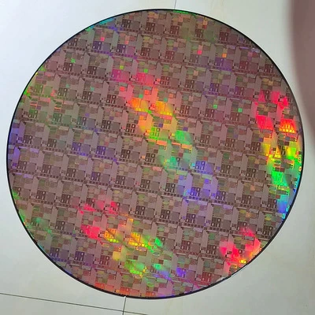
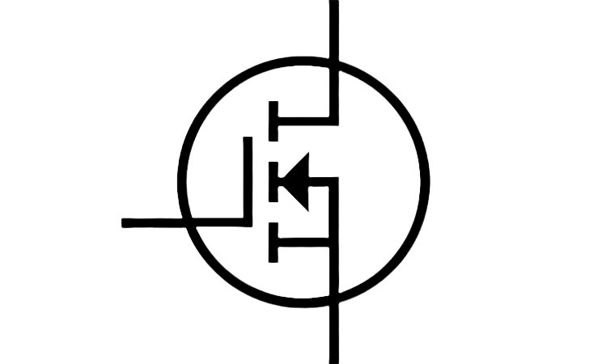

- @saicharan0112

- @saicharan0112

- linkedin.com/in/saicharan0112
I work as a CAD Engineer at onsemi, in a team which is responsible for EDA (Electronic Design Automation) tools support and custom tools development for all mixed-signal and digital design teams across the company. I recently started my career after graduating with a Bachelors degree in Electronics and Communications Engineering in 2021. Since I just started the vehicle, I don't think I have anything to highlight in my profile. I think this role is cool because I get a great exposure on the entire chip development flow starting from the RTL till the mask preparation and also I get to write code that is linked with the chip design, which is more cool than I thought. For a person like me who likes to try and work with different thing, I think this role is perfect.
I am also into opensource silicon. Recently, like a couple of years ago, it started receving a lot of traction just because anyone can literally get their design manufactured. Check this video to get a better understanding on what I am talking about (link). Not to mention, the entire Semiconductor industry got a lot of traction because of the chip shortage and every country is looking for an opportunity to enter into the supply chain. Even India, despite failing twice, is taking giant steps towards creating a supply chain inside the country. So the time I started my career was one of the hottest times in the industry itself. There was a whole different situation in the geo-politics however. Pivoting back to the opensource silicon, I work in a project name OpenFASOC which tries to create generators that generates analog blocks like temperature sensor, LDO, DC-DC converter etc. I think this is a pretty cool project since it is trying to automate a significant part of analog design in a more practical way. I am currently focusing on establishing a regression flow which tests these generators for their performance and efficiency. I also randomly contribute to other projects in this domain but the contributions are not worth mentionable. Feel free to checkout my github profile to see what projects I am working on recently.
In my final year of my graduation, I was hunting and was curating literally any type of VLSI related resources. At that time, I thought it will be useful to place everything on a website which makes it easy to navigate between various fields, so I purchased a domain vlsiresources.com. I named it as "VLSI Resources" because it sounded simple and obvious to what purpose it is serving.
I started this blog to write/document/organize things that I get to work with, in the IC domain. Some blogs might be very obvious, some might be outdated, some might have a detailed history of something, some might be more technical and so on. Being in the early career years, I think it is important to observe everything around and analyse them. And I think that writing is a way to accomplish it effectively. Below are my important public profiles, feel free to get in touch with me.
- @saicharan0112
- @saicharan0112
- linkedin.com/in/saicharan0112




Copyright © Sai Charan L All content on this blog is shared under the Creative Commons license CC BY-NC-ND